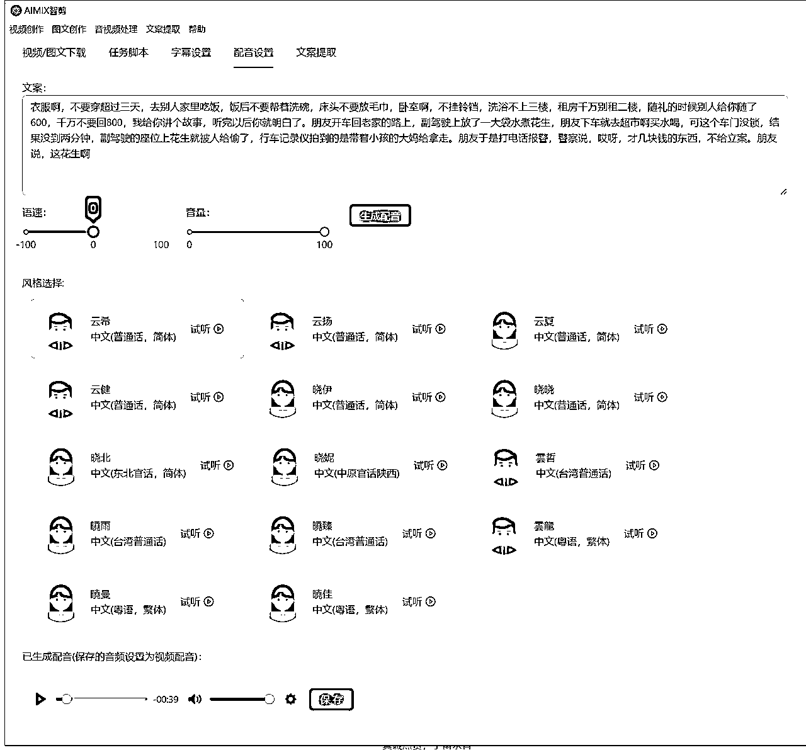

来源：https://ijarxpcwej.feishu.cn/docx/GtIrdOq3Rota6yxNjkjc2a9Dngb
圈友们好，我是小辉AI教练，一名AIGC创业者，距离上次发帖过去了有1个多月，最近一直在忙着优化软件功能和用户体验，最近软件又更新了一些比较实用的功能，赶紧来跟圈友们分享一下。另外，最近上架了一门AI入门课《AI零基础变现实战课，搞定10+变现场景与AIGC必备技能》
关于一些产品的剪辑原理和基础操作，这里就不重复了，没看过的圈友可以看下之前发的帖子：
我们在短视频剪辑的流程中，素材总是很重要的一个环节，但是我们自己去收集素材和处理素材又比较费时费力，所以我们会针对这个需求场景做一些产品化的设计，比如最近更新的图文/视频提取功能，可以提取网络平台的一些视频和图文素材，用于二次创作，但是我们不鼓励直接搬运，一是容易违规，二是侵权。
然后我们优化了视频合成的一些用户体验和性能，这次我们重构了视频处理的底层代码，视频处理的核心库也升级到最新版本，然后还增加了GPU加速功能，单个视频合成速度提升100%，优化了字幕设置和配音设置，让用户在使用过程中更加丝滑，然后把文案提取功能独立出来，后续还会增加批量提取和图片文案提取等等。。
关于素材库，我们后续计划要开发一个在线素材库，提供一些原创素材给用户使用，然后加一些素材梳理功能，比如智能分镜，目的是让用户建立自己的创作素材库，在创作视频时更加有料。
以下就是最近几个版本更新的具体内容：
